AguaraPOS
Manual del encargado
Este manual cubre lo que rodea a la venta: usuarios, artículos, compras, control de la caja, reportes y mantenimiento. Lo que hace el cajero está en su propio manual.
En todos los formularios, los datos con * son obligatorios. Antes de dar de baja, quitar o desactivar algo, el programa pregunta: Enter y Esc cancelan, y para confirmar se pulsa Tab y Enter, o el botón rojo.
1. Puesta en marcha
La primera vez que el programa abre con una base nueva, pide crear el administrador. Después, en este orden:
- Preferencias > Impresora y comercio: datos del comercio, impresora y prueba de impresión. El nombre del comercio es obligatorio, porque encabeza los tickets.
- Usuarios: un usuario para cada persona. No comparta usuarios: la auditoría registra quién hizo qué.
- Inventario: cargue o importe los artículos, y sus códigos. También puede crearlos a medida que llegan, con Alta de productos.
- Caja > Medios de pago: deje en uso los que acepta el comercio.
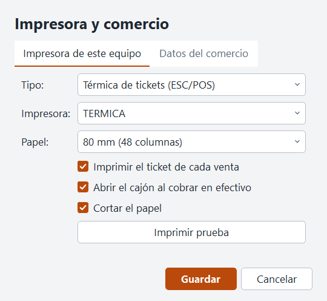
El ticket es un comprobante interno y dice «No válido como factura». No lleva timbrado.
2. Usuarios y permisos
En Usuarios, cada persona tiene uno o más roles, y cada rol tiene permisos y un descuento máximo.
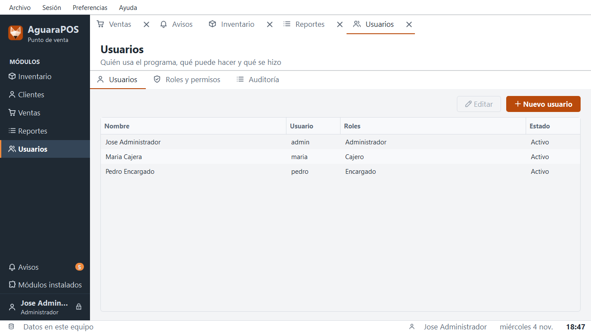
| Rol | Puede | Descuento sin pedir |
|---|
| Administrador | Todo | 100 % |
| Encargado | Todo salvo usuarios y conexión | 20 % |
| Cajero | Vender, abrir y cerrar la caja, y cargar clientes | 5 % |
El nombre de usuario no lleva espacios. Para que alguien deje de entrar, desmarque Activo en su ficha: lo que hizo sigue en la auditoría.
Se pueden crear otros roles en Roles y permisos. Cuando alguien no tiene un permiso, el programa pide un supervisor en ese momento, sin cerrar su sesión. La pestaña Auditoría muestra lo que hizo cada uno.
3. Artículos
Nuevo artículo crea uno. Alta de productos carga lo que llegó (sección 4). En el menú Más están los ajustes de stock, el historial, el cambio de precios y las etiquetas de góndola.
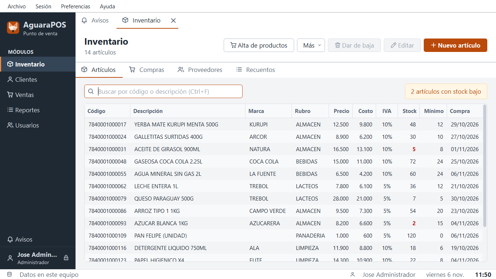
- Buscar: la tabla se reduce mientras escribe, por código, descripción, marca o rubro, sin importar acentos ni el orden de las palabras. Esc borra la búsqueda.
- Precio: un artículo se guarda con precio mayor que cero. Si no, pasaría gratis por la caja.
- Código propio: para lo que llega sin código de barras, pulse Generar junto al código. El programa elige uno que ningún artículo usa, que empieza con 299, y sus barras salen en las etiquetas.
- Importar: Archivo > Importar > Artículos carga un archivo CSV. Las líneas con montos negativos o una tasa de IVA que no existe se saltan, y el aviso final dice cuáles.
- Dar de baja: el artículo deja de ofrecerse, pero su historial queda.
- Cambio de precios: sube o baja por porcentaje, por rubro o marca, con redondeo hacia arriba. Muestra el resultado antes de aplicarlo.
- Stock mínimo: al llegar a su mínimo, también por una venta en la otra caja, aparece un aviso.
- Unidades de venta: el botón junto a Unidad de venta, en la ficha del artículo, agrega o quita unidades. Lo que se pesa o se mide lleva decimales, hasta 3. Una unidad que usa algún artículo activo no se puede quitar, y tampoco la unidad básica. Las ventas pasadas no cambian.
- Vencimiento: cada alta guarda su propio lote, con su fecha. Una venta toma primero la fecha vigente más próxima y después el stock sin fecha. Los lotes vencidos no se venden: quedan retenidos hasta que alguien los dé de baja, y siguen avisando. Como el escáner no distingue lotes, la cantidad de cada lote es una estimación: si un cajero vende primero lo más nuevo, se corrige con un recuento o un ajuste. La columna Vence muestra la fecha más próxima, en rojo si ya pasó.
- Lotes: en Más > Historial del artículo > Lotes se ven los lotes y el stock sin fecha. Poner fecha fecha stock que no tiene, y Quitar fecha corrige una fecha equivocada: el stock queda. Para sacar un lote vencido, use Más > Ajustar stock: sale primero la fecha más próxima. El CSV de artículos, con la columna Vencimiento, da esa fecha a todo el stock sin fecha. Un artículo nuevo puede empezar con su fecha en la ficha.
- Avisos de vencimiento: los lotes vencidos aparecen como aviso rojo, y los que vencen pronto como advertencia, 30 días antes, con su cantidad. Ese plazo se cambia en Más > Aviso de vencimiento. Un lote agotado no avisa, y el último día todavía cuenta como vigente.
- En la caja: al escanear un artículo con un lote vencido aparece una alerta. Con OK el cajero confirma que esa unidad no está vencida, y sigue la venta. Con Dar de baja el cajero confirma cuántos descarta, y lo demás sigue en la venta. La baja necesita un supervisor, con el permiso Dar de baja en caja un artículo vencido. Queda en los movimientos del artículo, con el cajero y quien la autorizó. Si no se autoriza, vuelve la alerta.
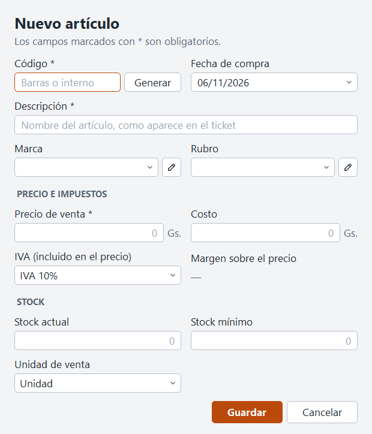
4. Alta de productos y proveedores
Alta de productos carga lo que llegó, y se abre desde Inventario o desde la pestaña Compras. Se trabaja como en una venta.
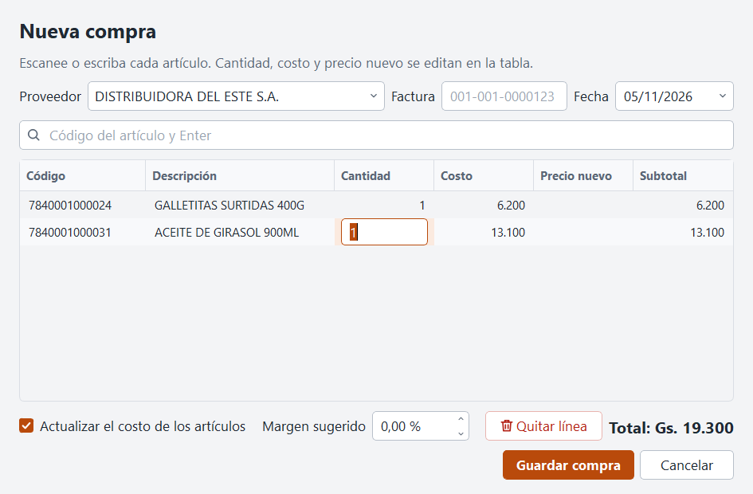
- Elija el proveedor. Si no está, Nuevo proveedor lo crea y lo deja elegido.
- Escriba la factura. Es opcional, pero el programa no deja cargar dos veces la misma factura de un proveedor.
- Escanee cada artículo, o empiece a escribir y elija de la lista. El mismo artículo otra vez suma uno a su línea.
- En la tabla, ajuste la cantidad, el costo y el margen o el precio de venta. Al cambiar el margen, el precio se calcula y se redondea hacia arriba, de a 100 guaraníes. Al cambiar el precio, se muestra el margen.
- Pulse Dar de alta. El stock sube, y el costo y el precio se actualizan.
- Elija cuántas etiquetas imprimir. Sale una por unidad recibida; lo que se vende por peso, una sola. Ponga 0 en lo que no necesite, o pulse Ahora no.
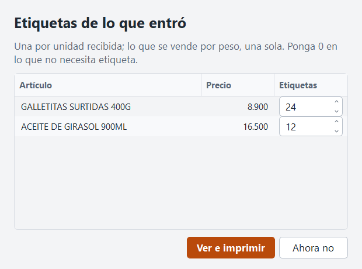
- Artículo nuevo: si escanea un código desconocido, se abre el formulario con ese código. Sin código, use Nuevo artículo y Generar. Al guardar, el artículo pasa a la lista. Su stock es la cantidad de esta alta.
- Margen sugerido: con un valor, cada costo calcula su precio. Déjelo en 0 para fijar el precio línea por línea.
- Actualizar el costo: desmárquelo si esta compra no debe cambiar el costo de los artículos.
- Vencimiento: escriba la fecha como dd/mm/aaaa: esa cantidad forma un lote, o se suma al del mismo día. Vacío, entra sin fecha.
La pestaña Proveedores tiene su propia búsqueda. Solo el nombre es obligatorio, y no puede haber dos proveedores activos con el mismo nombre.
Importar clientes y proveedores
Archivo > Importar carga una lista desde un CSV guardado en Excel. La primera fila con una columna Nombre es el encabezado: las columnas van en cualquier orden, y las que el programa no conoce se ignoran.
- Clientes: Nombre (o Cliente, Razón social), RUC, Cédula (o CI), Dirección, Teléfono (o Celular), Correo (o Email). En lugar de RUC y Cédula puede usar Documento y, si quiere, Tipo documento. Sin tipo, un número con guion es un RUC y sin guion, una cédula. Los puntos del número no importan. Importar clientes requiere un permiso propio, que el Cajero no tiene.
- Proveedores: Nombre (o Proveedor, Razón social), Dirección, Teléfono (o Celular), Correo (o Email), Contacto, Web, Notas (u Observaciones).
- Quién es quién: un cliente se reconoce por su documento y, sin documento, por su nombre. Si varios tienen ese nombre, la línea se salta. Un proveedor se reconoce por su nombre. Si no se reconoce, se crea uno nuevo.
- Lo que ya estaba: una celda vacía conserva el dato guardado, así que puede importar el mismo archivo dos veces o uno que solo traiga teléfonos.
- Errores: las líneas con un RUC, teléfono o correo inválido se saltan, y el aviso final dice cuáles. Si falla la base de datos, no se guarda nada.
5. Recuentos
- En Recuentos, elija un rubro y pulse Preparar planilla.
- Escanee cada unidad o escriba lo contado.
- Pulse Aplicar recuento. Solo se ajusta lo que se contó. Si una cantidad dice revisar, corríjala: el recuento no se aplica hasta entonces.
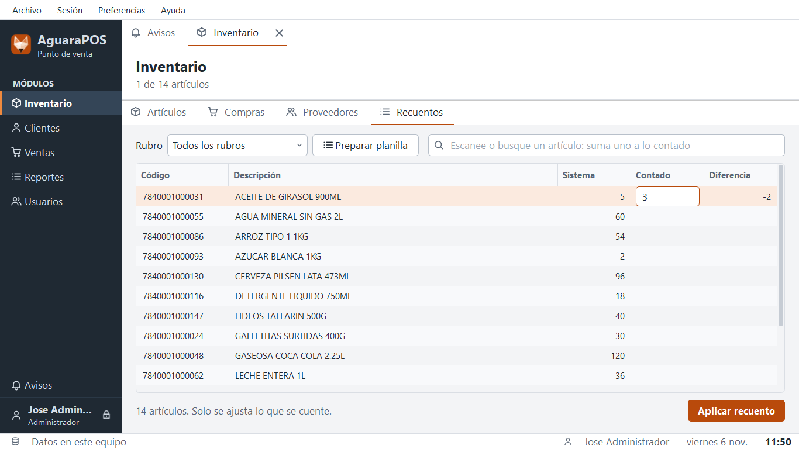
6. Promociones
Una promoción es un descuento con fechas. En Promociones pulse Nueva promoción. La caja la aplica sola: el cajero no hace nada, y el ticket la muestra con su nombre.
Qué descuenta
- Porcentaje: por ejemplo 20 %.
- Importe menos por unidad: Gs. 2.000 menos en cada unidad.
- Precio de promoción: cada unidad a ese precio. Si el artículo ya cuesta menos, no cambia nada.
- Lleva y paga: por ejemplo lleva 3, paga 2. Se repite: quien lleva 6 paga 4.
- Cantidad mínima: opcional. El descuento empieza cuando la línea llega a esa cantidad.
Cuándo
Vale desde el primer día hasta el último, los dos incluidos. Quite los días de la semana que no correspondan: con solo martes y jueves, se aplica únicamente esos días.
A qué artículos
- Todos los artículos o Los elegidos abajo. Elija Artículo, Rubro o Marca y pulse Incluir o Excluir. Un rubro lleva sus subrubros.
- Artículo: escanee el código o escriba la descripción. Con Elegir varios marca muchos a la vez en una lista.
- Excluir: deja algo fuera aunque otra regla lo elija. Sirve para una marca entera menos un artículo.
- Invertir: toma todos menos los elegidos, por ejemplo todo menos Cigarrillos. Lo excluido sigue fuera.
- Rubro y marca a la vez: toma solo los artículos de ese rubro que además sean de esa marca. Sin esta opción se suman.
Mientras elige, el formulario dice a cuántos artículos alcanza, y Ver artículos los lista con su precio de promoción. Revíselo antes de guardar: una regla mal puesta descuenta de más.
En la venta
- Si un artículo está en varias promociones, se aplica la que más descuenta. No se suman.
- Una promoción no usa el límite de descuento del cajero. El descuento manual se calcula sobre el precio de promoción, y puede sumarse a ella.
- Cambiar la cantidad vuelve a calcular la promoción. Una venta en espera la recalcula al recuperarla, con las promociones de ese día.
- Las ventas hechas no cambian si después modifica la promoción.
La lista
El Estado dice qué hace cada una hoy: Vigente, Programada, Hoy no aplica, Terminada o De baja. Duplicar copia una para repetirla con otras fechas. Dar de baja la detiene al momento. El reporte Ventas por promoción muestra lo vendido y lo descontado con cada una.
7. Control de la caja
Cierre con diferencia
Si el conteo no coincide, el cajero vuelve a contar o llama a un supervisor. Solo el supervisor ve lo esperado, y debe escribir un motivo. La diferencia queda en la planilla y en los reportes.
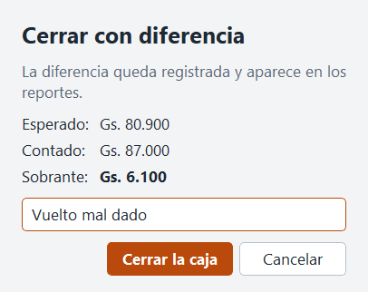
Planillas de cierre
Caja > Planillas anteriores reimprime cualquier cierre.
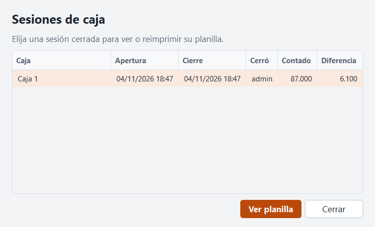
Conciliar tarjetas y transferencias
La planilla lista cada pago en Comprobantes por conciliar. Compárela con el cierre de lote de la terminal y con el extracto del banco. El programa no se conecta con la terminal: solo esta comparación confirma que el pago existió.
Si un cajero carga un código ya usado sin conexión, el programa no puede frenarlo en el momento. Queda en la auditoría como venta.comprobante_repetido: revíselo.
Movimientos y devoluciones
Los gastos y retiros salen en Caja > Movimiento de caja, con un motivo. En una devolución, elija lo devuelto y por qué medio sale el dinero, hasta lo que entró por ese medio, o emita una nota de crédito.
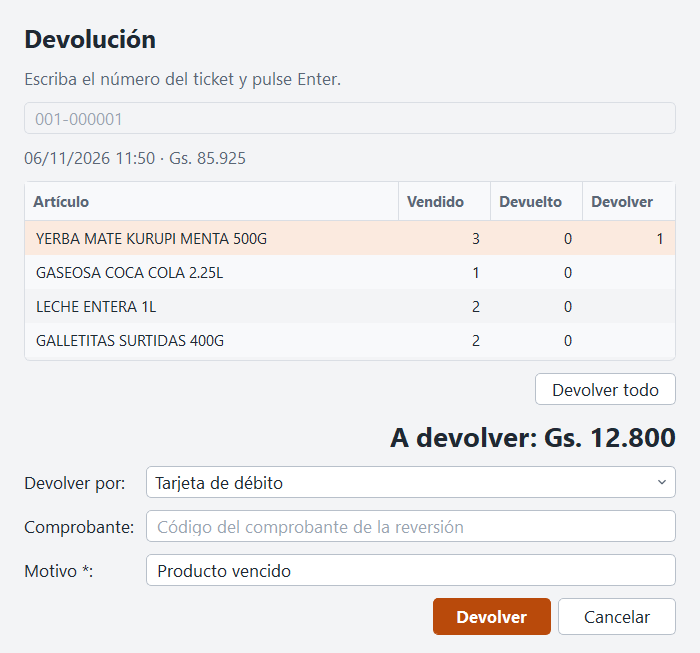
Una nota de crédito no vence y la usa quien tenga el número. Pida el ticket al recibirla.
Medios de pago
En Caja > Medios de pago se agregan otros medios y se elige si piden código. Dejar de usar uno pide confirmar, y las ventas anteriores no cambian. Solo el efectivo entra en el arqueo.
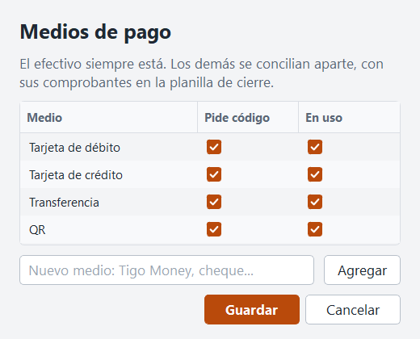
8. Reportes
Elija un reporte en la lista, ajuste los filtros y pulse Ver. Todos se imprimen y se exportan a PDF o a CSV para Excel.
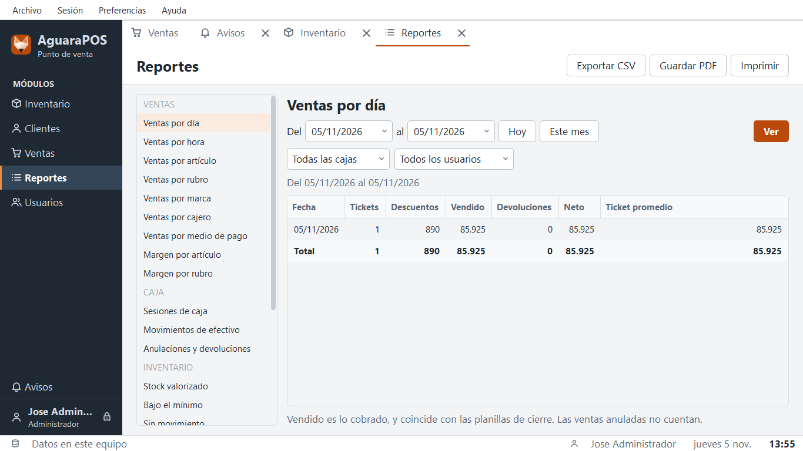
- Ventas por día coincide con las planillas de cierre.
- Las devoluciones cuentan el día en que ocurrieron, no el de la venta.
- El margen usa el costo del día de cada venta, con IVA en ventas y en costo.
- Resumen de IVA y Libro de ventas son internos: contrólelos con su contador.
- Un aviso indica si hay ventas sin subir, que todavía no están en los reportes.
- Un PDF o una impresión de miles de filas tarda unos segundos, y el programa espera hasta terminar. Para mirar muchos datos en Excel, CSV es lo más rápido.
9. Las dos cajas y el servidor
Los datos están en el servidor PostgreSQL de una de las cajas.
- La caja del servidor se enciende primero y se apaga al final. Sin ella, la otra caja no puede entrar.
- Si se cae mientras la otra trabaja, esa caja termina la venta en pantalla y la guarda en su cola. Sube sola al volver la conexión.
- Caja > Ventas por subir muestra lo que espera. Si el servidor rechazó una venta, aparece el motivo. Corrija la causa y pulse Reintentar ahora.
- No borre el archivo ventas-pendientes-aguara.db de la carpeta de AguaraPOS: son ventas cobradas.
- No exponga esa caja a Internet. Windows 7 y PostgreSQL 10 ya no reciben correcciones de seguridad.
La conexión se cambia en Preferencias > Conexión a los datos, y se aplica al reiniciar. Los datos no se copian de una base a otra.
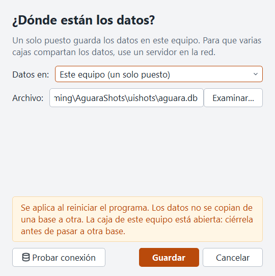
10. Copias de seguridad
La caja del servidor hace una copia diaria con la tarea programada. Esa copia queda en el mismo disco, y si el disco falla se pierde junto con los datos.
Copie los respaldos cada semana a un pendrive o disco externo, y guárdelo fuera de la caja. Es lo único que protege los datos de un disco roto, un robo o un incendio.
11. Aplicar un parche
- Fuera del horario de venta, cierre la caja y salga de AguaraPOS en todos los equipos.
- Haga una copia de seguridad.
- Ejecute el parche en la caja del servidor y abra AguaraPOS: actualiza los datos.
- Ejecute el parche en la otra caja.
Un parche no toca los datos ni las ventas en cola. Un equipo sin actualizar no entra hasta recibirlo, y sus ventas esperan a salvo.
12. Registros de este equipo
Cada equipo guarda sus propios registros, siempre, y no salen de ahí. Sirven para averiguar qué pasó. Ayuda > Carpeta de registros los abre.
| Archivo | Qué tiene |
|---|
| aguara.log | Errores técnicos y avisos del programa |
| actividad-AAAA-MM.log | Qué hizo el programa y a qué hora: una línea por venta, reporte o módulo abierto. Solo el nombre de la acción, sin clientes, artículos ni montos. Se guardan 12 meses |
| crashes | Una ficha por cada cierre inesperado: código del error, versión y lugar del programa |
Tras un corte de luz o un cierre forzado, actividad marca programa.cierre_inesperado. Las líneas anteriores muestran qué se estaba haciendo. Quién hizo qué, con sus detalles, está en la pestaña Auditoría de Usuarios.
13. Telemetría
Durante la prueba, cada equipo puede enviar a un servidor propio estadísticas de uso, cierres inesperados y reportes de problemas. Está apagada hasta que un administrador la active, equipo por equipo, en Preferencias > Telemetría.
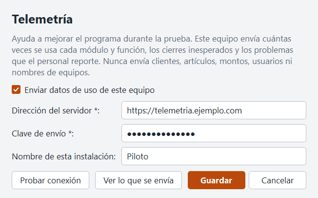
- Qué envía: cuántas veces por día se usa cada módulo y función, y en los cierres inesperados, el código del error y el lugar del programa. También la versión, Windows y el nombre que usted elija para el equipo.
- Qué nunca envía: clientes, artículos, montos, usuarios ni nombres de equipos.
- Ver lo que se envía muestra el contenido exacto del próximo envío.
- Sin servidor no pasa nada: la venta nunca espera, y los datos quedan guardados para el próximo envío.
- Al activarla, también se envían los cierres inesperados guardados que no se enviaron antes.
Con la telemetría activa, Ayuda > Reportar un problema queda disponible para todo el personal. Envía solo lo que la persona escribe.
Problemas frecuentes
| Qué pasa | Qué hacer |
|---|
| Una caja no entra: sin conexión | Revise que la caja del servidor esté encendida y que el cable de red esté conectado. |
| «Datos de una versión más nueva» | Aplique el último parche en ese equipo. |
| «Hay ventas sin subir» al cerrar | Espere a la conexión, o revise Caja > Ventas por subir. |
| El cajón no abre | Debe estar conectado a una impresora térmica configurada. Pruebe con Caja > Abrir cajón. |
| Letras raras en el ticket | Avise a soporte con una foto de la prueba de impresión. |
| Olvidó una contraseña | Un administrador la cambia en Usuarios. |
| «Ya existe el proveedor» | Búsquelo en la lista del alta, o use otro nombre. |
| «La factura de este proveedor ya está cargada» | Esa compra ya entró. Revise la pestaña Compras antes de cargarla de nuevo. |